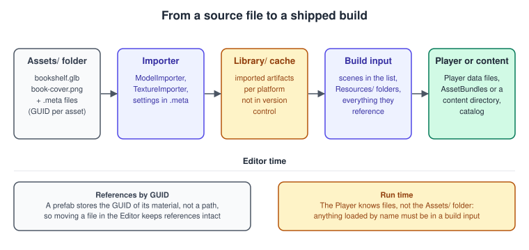
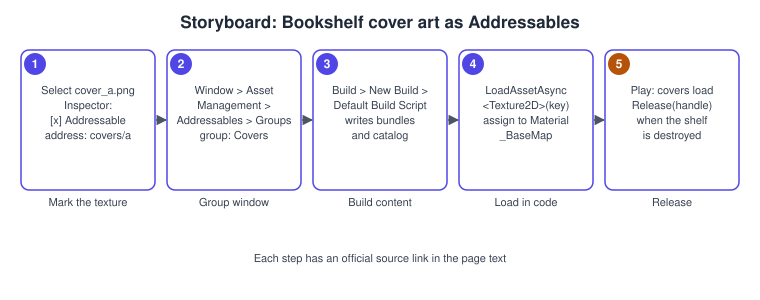
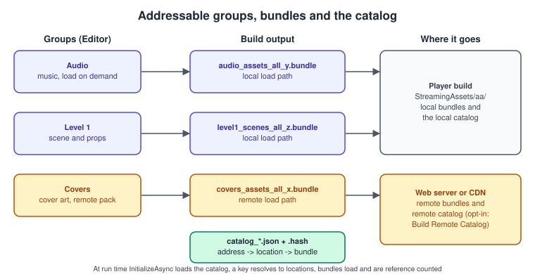

Assets, Addressables and Content
|
This content was generated with the assistance of AI and should be verified against the official documentation before being relied on in production. |
A game is code plus content, and most of its size is content: models, textures, audio, scenes. How that content gets from a file on an artist’s disk into memory on a player’s device decides the size of the first download, the start-up time, the memory use and whether you can fix a typo in a cover texture without shipping a new application. Unity has several answers, from the simplest (reference the asset in a scene and it is in the build) to remote catalogs served from a content delivery network. This page explains each answer, when to use it, and how to load, release and update content correctly.
The facts were checked in November 2026. The version documented is Unity 6.3 LTS (6000.3) with the Addressables package 4.1, which the 6.3 LTS package list ships; the content directory system arrived in Unity 6.6 (6000.6) and is described with its limits. The code runs on every platform Unity builds for, and the remote parts need a web server or a content delivery network. In the running example, the Bookshelf, the shared model bookshelf.glb is imported once and the nine cover textures become Addressable assets that the shelf loads on demand and releases when a book leaves the scene. Neither of the two reference books covers any of this: both predate Addressables as a mainstream workflow. For the general idea of asset formats and scene graphs see Scene Graphs and Asset Formats; the prefabs and scenes that reference the assets are in Prefabs and Scenes.
The import pipeline

Everything in the project’s Assets folder is a source asset: a .glb model, a .png texture, a .wav clip, a prefab, a scene, a script. Unity never uses the source file at run time. When a file appears or changes, the importer for its type reads it together with its import settings and writes an imported artifact into the Library folder. Those artifacts are what the Editor and the build actually use. The relevant facts:
-
Each source asset has a
.metafile. It stores the asset’s GUID (a stable 128-bit identifier) and the import settings. Always commit the.metafiles and move or rename assets inside the Editor, so that the GUID survives. A prefab stores the GUID of the material it uses, not a path, so references stay intact when a file moves, and break when the.metafile is lost. -
The
Libraryfolder is a cache and is not committed. It can be deleted and is rebuilt by reimporting, which is slow on a large project. Teams that need fast first-time imports use a shared cache server, outside the scope of this page. -
Import settings are part of the asset. The same PNG can become a sRGB colour texture, a linear normal map or a sprite, and a compressed format per platform (see Materials, Textures and Lighting). Changing a setting reimports the asset.
-
Importers are extensible. A scripted importer turns a custom file format into an asset; the glTF importer packages do the same for the Bookshelf model.
-
The build collects what it can reach. The Player contains the scenes in the build list, every asset those scenes reference (directly or through other assets), and everything inside
ResourcesandStreamingAssetsfolders. An asset that nothing reaches is not included, which is why loading content by name needs one of the mechanisms below.
// Assets/Editor/CoverImportReport.cs: prints the GUID, path and importer of the selected assets.
using UnityEditor;
using UnityEngine;
namespace Bookshelf.EditorTools
{
public static class CoverImportReport
{
[MenuItem("Bookshelf/Report Selected Assets")]
static void Report()
{
foreach (string guid in Selection.assetGUIDs)
{
string path = AssetDatabase.GUIDToAssetPath(guid);
AssetImporter importer = AssetImporter.GetAtPath(path);
Debug.Log($"{path}\n GUID: {guid}\n importer: {importer?.GetType().Name ?? "none"}\n main type: {AssetDatabase.GetMainAssetTypeAtPath(path)?.Name}");
}
}
}
}Source: Unity Manual: Asset database and Scripting API: AssetDatabase.
Four ways to get an asset into memory
| Mechanism | How the asset gets into the build | How you load it | Fits |
|---|---|---|---|
Direct reference |
a scene, prefab or ScriptableObject field points at it; the build follows the reference |
already loaded with its owner (the scene or prefab) |
content that is always present; the default and the simplest |
|
every asset under any folder named |
|
prototypes and tiny projects; the manual presents it for managing assets on a small scale |
AssetBundle |
you assign assets to named bundles and build them with a script |
|
custom pipelines that need full control; the layer under Addressables |
Addressables |
you mark assets Addressable and organise them in groups; a build step makes bundles and a catalog |
by address, label or |
most content that should load on demand, be downloaded or be updated remotely |
Content directory (6.6) |
you define content with root assets; Unity builds a content directory |
the |
local content in Unity 6.6 and later, with automatic de-duplication |
The right default is: direct references for what is always needed, Addressables for everything that is optional, large, or should change after release. The next sections go through the weaker options briefly, because you will meet them in existing projects, and then cover Addressables in depth.
The Resources folder
Any asset inside a folder named Resources is included in every build and can be loaded by path:
using UnityEngine;
namespace Bookshelf.Content
{
// Works, and shows why Resources is discouraged: everything under Assets/**/Resources
// ships in the build whether the game uses it or not, and the load call blocks unless
// you use the asynchronous variant.
public sealed class ResourcesCoverLoader : MonoBehaviour
{
[SerializeField] string coverName = "Covers/cover_a"; // Assets/Resources/Covers/cover_a.png
System.Collections.IEnumerator Start()
{
ResourceRequest request = Resources.LoadAsync<Texture2D>(coverName);
yield return request;
if (request.asset == null)
{
Debug.LogError($"No texture at Resources/{coverName}", this);
yield break;
}
GetComponent<Renderer>().material.mainTexture = (Texture2D)request.asset;
}
}
}The problems are structural. The folder cannot be split, patched or downloaded later; it makes the Player larger because unused assets are included; there is no unload except Resources.UnloadAsset for single assets or Resources.UnloadUnusedAssets, which scans the whole heap; and a string path has no compile-time check. Keep Resources for editor tools or a handful of tiny ScriptableObjects, and move content to Addressables.
AssetBundles
An AssetBundle is a file that contains serialised assets and, optionally, scenes, built for one platform. You assign assets to a bundle (the Inspector shows an AssetBundle drop-down at the bottom of an asset) and build with BuildPipeline.BuildAssetBundles; at run time you load the bundle file, then load assets from it:
// Assets/Editor/BuildBundles.cs
using System.IO;
using UnityEditor;
using UnityEngine;
namespace Bookshelf.EditorTools
{
public static class BuildBundles
{
[MenuItem("Bookshelf/Build AssetBundles (current target)")]
static void Build()
{
string output = Path.Combine("Assets", "StreamingAssets", "Bundles");
Directory.CreateDirectory(output);
BuildPipeline.BuildAssetBundles(output, BuildAssetBundleOptions.None, EditorUserBuildSettings.activeBuildTarget);
AssetDatabase.Refresh();
}
}
}// Runtime/BundleCoverLoader.cs
using System.Collections;
using System.IO;
using UnityEngine;
namespace Bookshelf.Content
{
public sealed class BundleCoverLoader : MonoBehaviour
{
[SerializeField] string bundleName = "covers";
[SerializeField] string assetName = "cover_a";
AssetBundle _bundle;
IEnumerator Start()
{
string path = Path.Combine(Application.streamingAssetsPath, "Bundles", bundleName);
AssetBundleCreateRequest open = AssetBundle.LoadFromFileAsync(path);
yield return open;
_bundle = open.assetBundle;
if (_bundle == null) { Debug.LogError($"Could not open {path}", this); yield break; }
AssetBundleRequest load = _bundle.LoadAssetAsync<Texture2D>(assetName);
yield return load;
GetComponent<Renderer>().material.mainTexture = (Texture2D)load.asset;
}
void OnDestroy()
{
// false: unload the bundle file but keep the loaded assets that scenes still use.
// true would also destroy those assets and leave missing references behind.
if (_bundle != null) _bundle.Unload(false);
}
}
}Doing this by hand means you must track which bundle holds which asset, load the bundles an asset depends on, avoid loading the same bundle twice, decide when to unload, and detect duplicated assets that two bundles both contain. Addressables does all of that for you, and is built on AssetBundles (or, from 6.6, on content directories).
Addressables
The Addressables package gives every asset a stable address, builds the assets into bundles, writes a catalog that maps addresses to bundles, and provides an asynchronous API that loads an asset and its dependencies and counts references. The page you load by address does not care whether the bytes are in the Player or on a server; moving a group from local to remote changes a setting, not code.
Concepts
-
Addressable asset: an asset that is marked Addressable in the Inspector (or dragged into a group). It gets an address, a string key you can change, by default its path.
-
Group: a set of Addressable assets built together with the same settings. A group builds one or more bundles depending on its Bundle Mode (Pack Together, Pack Separately, Pack Together By Label). The group’s schema also sets the build and load paths and compression.
-
Label: a tag that cuts across groups. Loading by a label loads everything that carries it, for example every cover in the pack
covers. -
Catalog: a file with the addresses, labels and locations of the content. A remote catalog is a second one on a server, which the game can check for updates.
-
AssetReference: a serialised field that points to an Addressable asset by GUID. It shows in the Inspector as an object field, but does not pull the asset into the build’s dependency set the way a direct reference does; you load it explicitly.
-
Handle: every load returns an
AsyncOperationHandlethat reports status, progress, the result and any exception, and that you must release when you are done. -
Profiles: named sets of variables (for example the remote load URL) that groups use through their paths, so the same project builds for a test server and for production.
Source: Addressables: Introduction and Addressables 4.1 manual.
How a load works
Addressables initialises itself the first time you call it; calling Addressables.InitializeAsync() earlier, for instance on a loading screen, moves that cost to a moment you choose. A load runs in the background and the handle completes later: read handle.Status (Succeeded or Failed) before using handle.Result, subscribe to handle.Completed, await handle.Task, or yield return handle in a coroutine. handle.WaitForCompletion() blocks execution until the operation finishes, so a slow load freezes the frame; keep it for editor tools and tests.
Procedure: make the Bookshelf covers Addressable
The nine cover textures should not be in the first download. This procedure marks them Addressable, groups them, builds the content and loads one in the Bookshelf.
-
Install the package: Window > Package Manager, Unity Registry, search Addressables and install it. Source: Addressables: Set up.
-
Create the settings: Window > Asset Management > Addressables > Groups, and select Create Addressables Settings the first time. This creates the settings asset and a default group. Source: Addressables: Set up.
-
Mark the assets: select
cover_a.pngtocover_i.pngin the Project window and tick Addressable at the top of the Inspector, or drag them into the Groups window. Rename the group toCovers, and give the assets short addresses such ascovers/a. Source: Addressables: Create and organize Addressable assets. -
Add a label
coversto the nine assets (the Labels button in the Groups window), so they can be downloaded as a set. Source: Addressables: Create and organize Addressable assets. -
Build the content: in the Groups window choose Build > New Build > Default Build Script. The build writes bundles and a catalog; a Player build later includes the local ones. Source: Addressables: Build Addressable assets.
-
Add the
CoverArtLoaderscript below to a book, assign thecoverfield in the Inspector to a cover texture and press Play. In the Editor, the Groups window’s Play Mode Script menu controls whether Play Mode uses a content build or the project assets directly. Source: Addressables: Create and organize Addressable assets.

// Assets/Scripts/Content/CoverArtLoader.cs
using System;
using UnityEngine;
using UnityEngine.AddressableAssets;
using UnityEngine.ResourceManagement.AsyncOperations;
namespace Bookshelf.Content
{
/// <summary>Loads one cover texture through an AssetReference and applies it to the book's material.</summary>
[RequireComponent(typeof(Renderer))]
public sealed class CoverArtLoader : MonoBehaviour
{
static readonly int BaseMap = Shader.PropertyToID("_BaseMap"); // URP Lit
[SerializeField] AssetReferenceTexture2D cover;
Renderer _renderer;
MaterialPropertyBlock _block;
void Awake()
{
_renderer = GetComponent<Renderer>();
_block = new MaterialPropertyBlock();
}
async void Start()
{
if (cover == null || !cover.RuntimeKeyIsValid())
{
Debug.LogWarning("No cover assigned.", this);
return;
}
AsyncOperationHandle<Texture2D> handle = cover.LoadAssetAsync<Texture2D>();
try
{
await handle.Task;
}
catch (Exception e)
{
Debug.LogException(e, this);
return;
}
if (this == null) return; // the book was destroyed while the load was running
if (handle.Status != AsyncOperationStatus.Succeeded) return;
_renderer.GetPropertyBlock(_block);
_block.SetTexture(BaseMap, handle.Result);
_renderer.SetPropertyBlock(_block);
}
void OnDestroy()
{
// Every load needs a matching release; the reference tracks its own handle.
if (cover != null && cover.IsValid()) cover.ReleaseAsset();
}
}
}Instantiating prefabs and loading scenes
Addressables.InstantiateAsync loads a prefab and instantiates it; Addressables.ReleaseInstance destroys the instance and releases the load. Use them as a pair. For a scene, Addressables.LoadSceneAsync returns a handle whose result is a SceneInstance, and you unload it with Addressables.UnloadSceneAsync.
// Assets/Scripts/Content/ShelfLoader.cs
using System.Collections.Generic;
using System.Threading.Tasks;
using UnityEngine;
using UnityEngine.AddressableAssets;
using UnityEngine.ResourceManagement.AsyncOperations;
using UnityEngine.ResourceManagement.ResourceProviders;
using UnityEngine.SceneManagement;
namespace Bookshelf.Content
{
public sealed class ShelfLoader : MonoBehaviour
{
[SerializeField] AssetReferenceGameObject bookPrefab;
[SerializeField] string librarySceneKey = "scenes/Library";
[SerializeField] Transform[] slots;
readonly List<GameObject> _books = new List<GameObject>();
AsyncOperationHandle<SceneInstance> _library;
async void Start()
{
// 1. An additive scene from an Addressable address.
_library = Addressables.LoadSceneAsync(librarySceneKey, LoadSceneMode.Additive);
await _library.Task;
// 2. One book per slot; the reference counts the loads, ReleaseInstance releases them.
foreach (Transform slot in slots)
{
AsyncOperationHandle<GameObject> op = bookPrefab.InstantiateAsync(slot.position, slot.rotation, slot);
GameObject book = await op.Task;
if (this == null) { Addressables.ReleaseInstance(book); return; }
_books.Add(book);
}
}
public async Task ClearAsync()
{
foreach (GameObject book in _books)
if (book != null) Addressables.ReleaseInstance(book);
_books.Clear();
if (_library.IsValid())
await Addressables.UnloadSceneAsync(_library).Task;
}
void OnDestroy()
{
foreach (GameObject book in _books)
if (book != null) Addressables.ReleaseInstance(book);
}
}
}Reference counting and releasing
Addressables counts references. Each load increments an asset’s reference count and each release decrements it; when it returns to zero the asset can be unloaded, and a bundle has its own count, so the bundle unloads when none of its assets is in use. The rules that follow:
-
Mirror every call to a load method with a call to a release method. You can release with the handle that the load returned or with the asset.
-
For an instance created with
InstantiateAsync, release withAddressables.ReleaseInstanceor with the original handle, never by callingDestroyon it and never by passing the instance toAddressables.Releaseas if it were the loaded asset. -
Released does not mean unloaded: while other assets in the same bundle are still in use the bundle stays in memory, including the assets you released.
-
Do not release a handle twice, and do not keep using
handle.Resultafter releasing it. -
The count can be read as
AsyncOperationHandle.ReferenceCount, and the Addressables Profiler module in the Profiler window shows loads, handles and leaks.
Loading many assets, labels and merge modes
Addressables.LoadAssetsAsync loads everything that matches one or more keys and calls a callback per asset. With several keys, the merge mode decides the set: Union takes the assets that match any key, Intersection those that match every key, and UseFirst the assets of the first key that resolves. The final argument says whether a failed asset releases the whole operation (true: all or nothing) or whether the loadable assets still load (false).
using System.Collections.Generic;
using System.Threading.Tasks;
using UnityEngine;
using UnityEngine.AddressableAssets;
using UnityEngine.ResourceManagement.AsyncOperations;
namespace Bookshelf.Content
{
public sealed class CoverLibrary : MonoBehaviour
{
readonly List<Texture2D> _covers = new List<Texture2D>();
AsyncOperationHandle<IList<Texture2D>> _handle;
public IReadOnlyList<Texture2D> Covers => _covers;
public async Task LoadAllAsync()
{
// "covers" is a label, so every Addressable asset that carries it is loaded.
_handle = Addressables.LoadAssetsAsync<Texture2D>(
new List<string> { "covers" },
texture => _covers.Add(texture),
Addressables.MergeMode.Union,
releaseDependenciesOnFailure: true);
await _handle.Task;
Debug.Log($"{_covers.Count} covers loaded, status {_handle.Status}");
}
void OnDestroy()
{
if (_handle.IsValid()) Addressables.Release(_handle); // releases every asset of the operation
}
}
}Source: Addressables: Load assets.
Remote content and catalog updates

A group’s Build & Load Paths decide where its bundles end up. Local bundles are copied into the Player build. Remote bundles are built to a folder that you upload to a web server or a content delivery network, and the Player downloads them on demand and caches them on disk. To enable remote content with AssetBundles:
-
Open Window > Asset Management > Addressables > Settings and turn on Build Remote Catalog. Source: Addressables: Enable remote distribution.
-
Set the Build & Load Paths of the groups you want hosted remotely (for example
Covers) to the Remote option, and define the remote load URL in the active profile (Window > Asset Management > Addressables > Profiles). Source: Addressables: Profiles for remote content. -
Build the content, then upload the contents of the remote build folder, including the catalog and its hash file, to the URL in the load path. Source: Addressables: Enable remote distribution.
-
Build the Player. Unity Cloud Content Delivery is one hosting option; any server that serves files over HTTPS works. Source: Addressables: Cloud Content Delivery.
Remote distribution and the update workflow apply when the content build system is AssetBundles. At run time the game can check for a newer catalog, apply it, learn how much it has to download and fetch it before the player needs it:
// Assets/Scripts/Content/ContentUpdater.cs
using System;
using System.Collections.Generic;
using System.Threading.Tasks;
using UnityEngine;
using UnityEngine.AddressableAssets;
using UnityEngine.AddressableAssets.ResourceLocators;
using UnityEngine.ResourceManagement.AsyncOperations;
namespace Bookshelf.Content
{
public static class ContentUpdater
{
/// <summary>Applies catalog updates and downloads the content of one label. Returns the bytes fetched.</summary>
public static async Task<long> UpdateAndPrefetchAsync(string label, IProgress<float> progress = null)
{
await Addressables.InitializeAsync().Task;
// 1. Is there a newer catalog on the server?
AsyncOperationHandle<List<string>> check = Addressables.CheckForCatalogUpdates(false);
List<string> catalogs = await check.Task;
Addressables.Release(check);
if (catalogs != null && catalogs.Count > 0)
{
AsyncOperationHandle<List<IResourceLocator>> update = Addressables.UpdateCatalogs(catalogs, false);
await update.Task;
Addressables.Release(update);
}
// 2. How much is not cached yet?
AsyncOperationHandle<long> sizeHandle = Addressables.GetDownloadSizeAsync(label);
long bytes = await sizeHandle.Task;
Addressables.Release(sizeHandle);
if (bytes <= 0) return 0;
// 3. Download it, reporting progress.
AsyncOperationHandle download = Addressables.DownloadDependenciesAsync(label, false);
while (!download.IsDone)
{
progress?.Report(download.PercentComplete);
await Task.Yield();
}
bool ok = download.Status == AsyncOperationStatus.Succeeded;
Addressables.Release(download);
if (!ok) throw new InvalidOperationException($"Download of '{label}' failed.");
progress?.Report(1f);
return bytes;
}
}
}A content update build produces only what changed since the last release. Unity compares the current content with the addressables_content_state.bin file that the default build script writes on every content build; unchanged assets keep their original bundle names, so players keep using the bundles they already have, and changed assets go into new bundles with new names. Keep the addressables_content_state.bin of each release for every platform, and use the one from the last full release when you build an update. Group settings control whether a group is allowed to change after release: a group whose content you expect never to change should have updates prevented, and the Check for Content Update Restrictions tool moves changed assets of such groups into a new remote group.
Source: Addressables: Content update builds.
Content directories (Unity 6.6)
Unity 6.6 added a second content build system, the content directory, designed as a replacement for AssetBundles. Instead of naming bundles, you define content with root assets (ScriptableObject instances), build with BuildPipeline.BuildContentDirectory, and load individual assets with the Loadable<T> API, synchronously or asynchronously with async and await. Dependencies are tracked per asset, duplicated content is removed automatically, and the documentation lists reduced load times and lower memory overhead as benefits. The Addressables package supports content directories: the workflow of adding assets to groups and building from the Groups window stays the same, a new Content Directory schema controls those builds, and the Default Build Script handles both AssetBundle and content directory builds.
The limits matter for a shipping decision:
-
A content directory is a local content build that ships with the Player. It has no remote distribution mechanism; for remote content or content downloaded after install you build your own delivery or keep using AssetBundles.
-
It is best to choose one content build system per project. If you mix them, shared dependencies are built twice.
-
Circular references between assets make Unity load the assets together as one unit, and the build fails when the combined size of one cycle exceeds 64 MB.
-
A clean build can be slower than an AssetBundle build, while incremental builds only rebuild what changed.
-
Unity 6.6 also adds a Build Analysis window and build history reports in the
Library/BuildHistoryfolder, for Player and content directory builds.
For a Unity 6.3 LTS project the practical advice is to use Addressables with AssetBundles now, keep content grouped by lifetime so that a later conversion is mechanical, and read the conversion guide before moving.
Building the content from a script
A continuous integration job builds the content before the Player. The Addressables settings class exposes BuildPlayerContent:
// Assets/Editor/AddressablesBuild.cs
using UnityEditor;
using UnityEditor.AddressableAssets;
using UnityEditor.AddressableAssets.Build;
using UnityEditor.AddressableAssets.Settings;
using UnityEngine;
namespace Bookshelf.EditorTools
{
public static class AddressablesBuild
{
// Invoke from the command line with: -executeMethod Bookshelf.EditorTools.AddressablesBuild.Build
public static void Build()
{
AddressableAssetSettings.BuildPlayerContent(out AddressablesPlayerBuildResult result);
if (!string.IsNullOrEmpty(result.Error))
{
Debug.LogError($"Addressables build failed: {result.Error}");
EditorApplication.Exit(1);
return;
}
Debug.Log($"Addressables built in {result.Duration:F1} s, output {result.OutputPath}");
}
}
}Common mistakes
-
Forgetting to release. An asset whose handle is never released stays in memory for the whole session. Pair every
LoadAssetAsyncwith a release and everyInstantiateAsyncwithReleaseInstance. -
Using
Destroyon an Addressable instance. The instance is destroyed but the count is not decremented. UseAddressables.ReleaseInstance. -
Releasing at the wrong level. Releasing the last asset of a bundle and loading another one from it right afterwards loads the bundle again. Release content together, by scene or by level.
-
Duplicating dependencies. A texture used by two groups without being Addressable itself is copied into both. Make shared assets Addressable in a shared group, or use the Addressables analyze tools.
-
Blocking with
WaitForCompletion. It hides the cost of a load in one frame; use it in tools and tests. -
Holding a direct reference to an Addressable asset. A normal serialised field pointing at an Addressable texture pulls a second copy into the scene’s build data. Use an
AssetReferencefor content you intend to load on demand. -
Mixing platforms in one catalog. Bundles are per platform. Build content for each target and keep the
addressables_content_state.binof each. -
Updating content without the state file. If the content state file is lost, every bundle is rebuilt with new names and every player downloads everything again.
-
Calling the API before initialisation completes on a loading screen that has no error handling: a failed catalog download on a bad connection must show the player a retry, not a blank scene.
-
Catching the exception and ignoring the status. A failed handle holds the exception; log
handle.OperationException.
Performance notes
-
Group by lifetime and use: assets that load together belong in the same bundle, assets that are used by many things belong in a shared bundle, and optional DLC belongs in its own group.
-
Too many tiny bundles cost file handles and requests; too few huge bundles load far more than needed. The optimization tools of the package (the Analyze window and the build reports) show duplication and bundle sizes.
-
Prefer asynchronous loads and spread the work across frames; instantiating hundreds of prefabs in one frame spikes the frame time whatever the loading mechanism. See Profiling and Optimization and the general Performance and Profiling.
-
Compression trades size for load time: LZ4 allows loading parts of a bundle, LZMA is smaller but must be decompressed whole. Choose it per group.
-
Prefetch before the player needs the content, with
GetDownloadSizeAsyncandDownloadDependenciesAsync, and show the size to the player on cellular connections. -
Use the Memory Profiler and the Addressables Profiler module to find assets held by forgotten handles.
What changed recently
| Version | Date | Change |
|---|---|---|
Unity 6.0 |
October 2024 |
Build Settings became Build Profiles; the Web platform replaced WebGL as a name |
Unity 6.3 LTS |
December 2025 |
Addressables 4.1 is the package version in the 6.3 LTS package list; the documented baseline of this page |
Unity 6.6 |
September 2026 |
content directory build system for local content builds, supported by the Addressables package through a new schema; Build Analysis window and |
Unity 6.5 and later |
2026 |
obsolete accessors removed and |
Source: What’s new in Unity 6.6 and What’s new in Unity 6.3.
See also
-
Scene Graphs and Asset Formats: the general idea of asset formats and the scene graph.
-
Prefabs and Scenes: prefabs and additive scenes that Addressables loads.
-
ScriptableObjects and Data-Driven Design: ScriptableObjects as the root assets of a content directory and as data.
-
Build Profiles and Platforms: building the Player that carries the local content.
-
Web and WebGPU: hosting remote content for a Web build.
-
Profiling and Optimization: the Memory Profiler and the frame budget.
-
Saving, Loading and HTTP Networking: downloading data that is not content.
-
Asset Store and Packages: installing the Addressables package.
-
Resource Loading and Streaming (Metal) and Asset Loading: glTF and OBJ (OpenGL): the same problem at API level.
-
C# async and await: the
asyncandawaitsyntax used with handles.